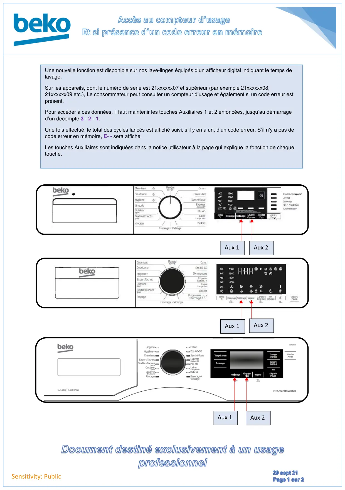
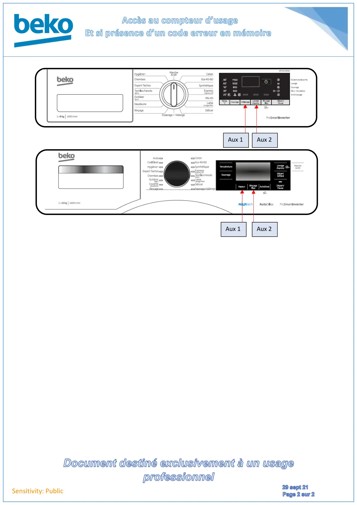

Note Technique Accès Compteur Usage et Code erreur

Sensitivity: PublicUne nouvelle fonction est disponible sur nos lave-linges équipés d’un afficheur digital indiquant le temps delavage.Sur les appareils, dont le numéro de série est 21xxxxxx07 et supérieur (par exemple 21xxxxxx08,21xxxxxx09 etc.), Le consommateur peut consulter un compteur d’usage et également si un code erreur estprésent.Pour accéder à ces données, il faut maintenir les touches Auxiliaires 1 et 2 enfoncées, jusqu’au démarraged’un décompte 3 - 2 - 1.Une fois effectué, le total des cycles lancés est affiché suivi, s’il y en a un, d’un code erreur. S’il n’y a pas decode erreur en mémoire, E- - sera affiché.Les touches Auxiliaires sont indiquées dans la notice utilisateur à la page qui explique la fonction de chaquetouche.Aux 1Aux 1Aux 1Aux 2Aux 2Aux 2
1 / 2
Sensitivity: PublicAux 1Aux 1Aux 2Aux 2
2 / 2